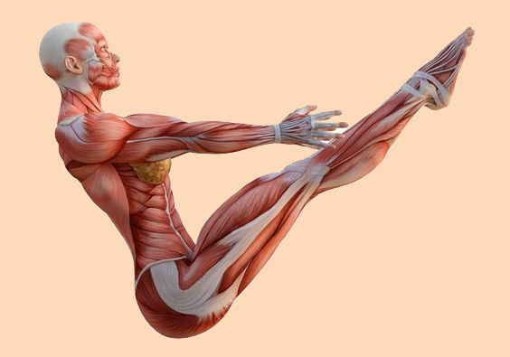

El funcionamiento eficiente de los músculos depende en gran medida de la disponibilidad de energía. Los músculos utilizan una combinación de fuentes de energía para llevar a cabo sus funciones y dos de las principales fuentes de energía son la glucosa y el oxígeno.
Glucosa: La glucosa es un azúcar simple que circula en el torrente sanguíneo y es esencial para la producción de energía muscular. Cuando los músculos se contraen durante la actividad física, la glucosa se descompone en el proceso de glucólisis para generar energía inmediata en forma de adenosín trifosfato (ATP). La glucosa proviene de los carbohidratos en la dieta y se almacena en forma de glucógeno en los músculos y el hígado para su uso posterior.
Oxígeno: A medida que la intensidad del ejercicio aumenta los músculos también dependen del oxígeno para producir energía de manera más eficiente a través de la respiración aeróbica. Durante la respiración aeróbica, la glucosa y otros sustratos se descomponen en el ciclo de Krebs y la cadena de transporte de electrones en las mitocondrias de las células musculares, produciendo una gran cantidad de ATP. Este proceso es esencial para actividades de larga duración y resistencia.
La capacidad de los músculos para utilizar la glucosa y el oxígeno de manera efectiva está influenciada por varios factores, como el entrenamiento físico, la dieta y la salud general. El equilibrio entre la producción de energía a través de la glucólisis anaeróbica y la respiración aeróbica depende de la intensidad y la duración de la actividad.

Imagen disponible en Pinterest
El ciclo de Krebs (ciclo del ácido cítrico o ciclo de los ácidos tricarboxílicos) es una ruta metabólica, es decir, una sucesión de reacciones químicas, que forma parte de la respiración celular en todas las células aerobias, donde es liberada energía almacenada a través de la oxidación del Acetil-Coenzima A (Acetil-CoA) derivado de glúcidos, lípidos y proteínas en dióxido de carbono y energía química en forma de Adenosina Trifosfato (ATP)
El ATP (Adenosín Trifosfato o Trifosfato de Adenosina) es la molécula portadora de la energía primaria para todas las formas de vida (bacterias, levaduras, mohos, algas, vegetales, células animales) todas ellas contienen ATP.